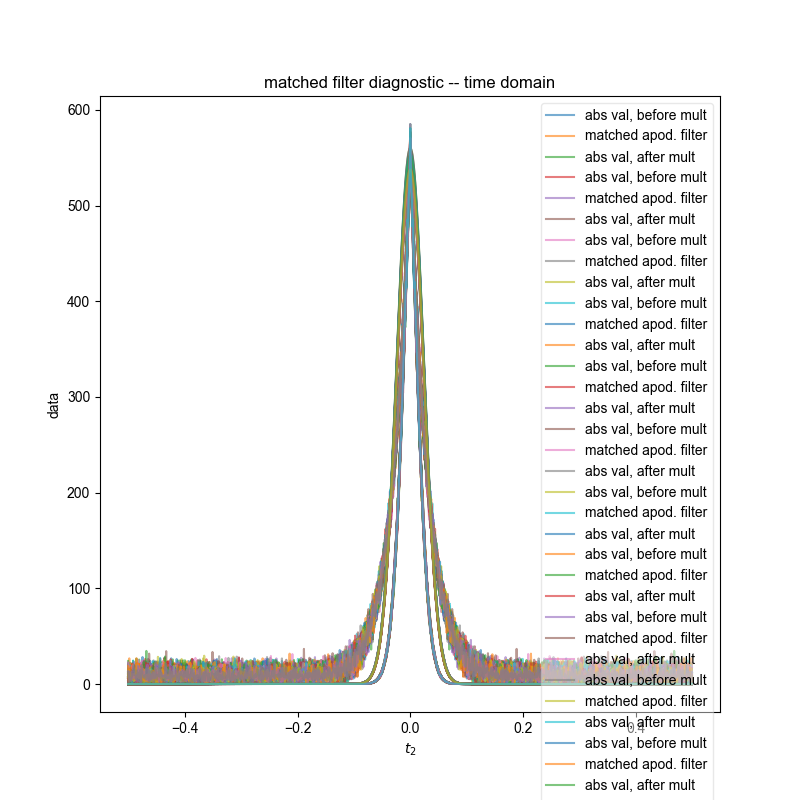
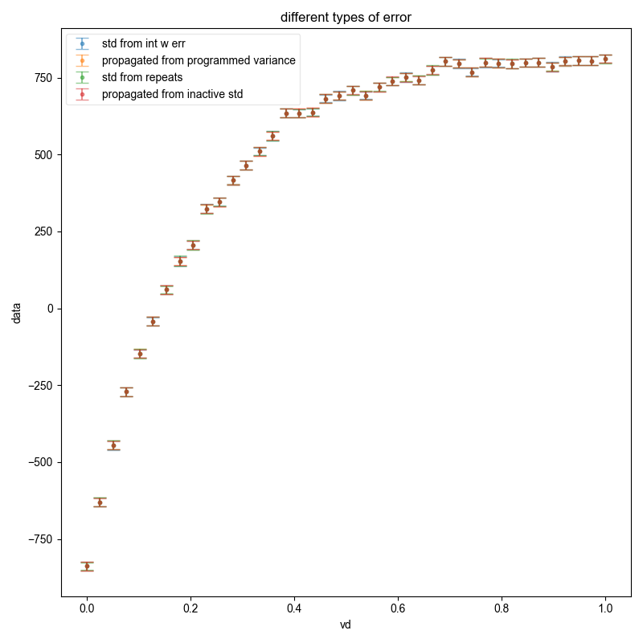

Note
Go to the end to download the full example code
Check integral error calculation¶
Generate a fake dataset of an inversion recovery with multiple repeats (φ × t2 × vd × repeats) w/ normally distributed random noise. Check that the following match:
integral w/ error (the canned routine
integral_w_errors())propagate error based off the programmed σ of the normal distribution
set the error bars based on the standard deviation (along the repeats dimension) of the real part of the integral
propagate error based off the variance of the noise in the inactive coherence channels (do this manually inside this script – should mimic what
integral_w_errors()does)

- 
- 
C:\Users\jmfranck\pyspecdata.0.log appears to be locked or otherwise inaccessible: I'm going to explore other options for fileno
---------- logging output to C:\Users\jmfranck\pyspecdata.8.log ----------
shape of all results [(40, 'vd'), (100, 'repeats')]
c:\users\jmfranck\git_repos\pyspecdata\pyspecdata\core.py:1959: UserWarning: marker is redundantly defined by the 'marker' keyword argument and the fmt string "o" (-> marker='o'). The keyword argument will take precedence.
retval = myplotfunc(*plotargs,**kwargs)
#0
#1
#2
#3
#4
#5
#6
#7
#8
#9
#10
#11
#12
#13
#14
#15
#16
#17
#18
#19
#20
#21
#22
#23
#24
#25
#26
#27
#28
#29
#30
#31
#32
#33
#34
#35
#36
#37
#38
#39
#40
#41
#42
#43
#44
#45
#46
#47
#48
#49
#50
#51
#52
#53
#54
#55
#56
#57
#58
#59
#60
#61
#62
#63
#64
#65
#66
#67
#68
#69
#70
#71
#72
#73
#74
#75
#76
#77
#78
#79
#80
#81
#82
#83
#84
#85
#86
#87
#88
#89
#90
#91
#92
#93
#94
#95
#96
#97
#98
#99
off-pathway std array([1.86639429, 2.13532026, 1.95773501, 1.94246111, 1.93060944,
2.13206575, 2.00872919, 2.04905229, 2.01021424, 2.01588764,
1.98313971, 1.96105098, 1.95551733, 1.9781281 , 2.00131382,
2.00442813, 1.92045567, 2.06495041, 2.00317676, 2.03198956,
2.00544709, 2.03250792, 1.93447913, 1.89214692, 2.06743386,
2.03373086, 2.02808928, 2.0162576 , 2.08907512, 2.02007657,
1.87751444, 1.89320537, 2.06079152, 1.96778088, 1.96253323,
2.02773125, 2.16292245, 1.88744034, 2.03248251, 2.07482991])
+/-None
dimlabels=['vd']
axes={`vd':array([0. , 0.02564103, 0.05128205, 0.07692308, 0.1025641 ,
0.12820513, 0.15384615, 0.17948718, 0.20512821, 0.23076923,
0.25641026, 0.28205128, 0.30769231, 0.33333333, 0.35897436,
0.38461538, 0.41025641, 0.43589744, 0.46153846, 0.48717949,
0.51282051, 0.53846154, 0.56410256, 0.58974359, 0.61538462,
0.64102564, 0.66666667, 0.69230769, 0.71794872, 0.74358974,
0.76923077, 0.79487179, 0.82051282, 0.84615385, 0.87179487,
0.8974359 , 0.92307692, 0.94871795, 0.97435897, 1. ])
+/-None}
programmed std 2.0
c:\users\jmfranck\git_repos\pyspecdata\pyspecdata\core.py:1804: UserWarning: marker is redundantly defined by the 'marker' keyword argument and the fmt string "." (-> marker='.'). The keyword argument will take precedence.
return ax.errorbar(*tebargs[:-1],**tebkwargs)
c:\users\jmfranck\git_repos\pyspecdata\pyspecdata\figlist.py:492: UserWarning: Tight layout not applied. The bottom and top margins cannot be made large enough to accommodate all axes decorations.
plt.gcf().tight_layout()
from pylab import *
from pyspecdata import *
from pyspecProcScripts import integrate_limits, integral_w_errors
# sphinx_gallery_thumbnail_number = 1
init_logging(level="debug")
fl = figlist_var()
t2 = nddata(r_[0:1:1024j], "t2")
vd = nddata(r_[0:1:40j], "vd")
ph1 = nddata(r_[0, 2] / 4.0, "ph1")
ph2 = nddata(r_[0:4] / 4.0, "ph2")
signal_pathway = {"ph1": 0, "ph2": 1}
excluded_pathways = [(0, 0), (0, 3)]
# this generates fake clean_data w/ a T₂ of 0.2s
# amplitude of 21, just to pick a random amplitude
# offset of 300 Hz, FWHM 10 Hz
clean_data = 21*(1 - 2*exp(-vd / 0.2))*exp(+1j*2*pi*100*t2 - t2*10*pi)
clean_data *= exp(signal_pathway["ph1"]*1j*2*pi*ph1)
clean_data *= exp(signal_pathway["ph2"]*1j*2*pi*ph2)
clean_data["t2":0] *= 0.5
fake_data_noise_std = 2.0
clean_data.reorder(["ph1", "ph2", "vd"])
bounds = (0, 200) # seem reasonable to me
result = 0
n_repeats = 100
all_results = ndshape(clean_data) + (n_repeats, "repeats")
all_results.pop("t2").pop("ph1").pop("ph2")
all_results = all_results.alloc()
all_results.setaxis("vd", clean_data.getaxis("vd"))
print("shape of all results", ndshape(all_results))
for j in range(n_repeats):
data = clean_data.C
data.add_noise(fake_data_noise_std)
# at this point, the fake data has been generated
data.ft(["ph1", "ph2"])
# {{{ usually, we don't use a unitary FT -- this makes it unitary
data /= 0.5 * 0.25 # the dt in the integral for both dims
data /= sqrt(ndshape(data)["ph1"] * ndshape(data)["ph2"]) # normalization
# }}}
dt = diff(data.getaxis("t2")[r_[0, 1]]).item()
data.ft("t2", shift=True)
# {{{
data /= sqrt(ndshape(data)["t2"]) * dt
error_pathway = (set(((j,k) for j in range(ndshape(data)['ph1']) for k in range(ndshape(data)['ph2'])))
- set(excluded_pathways)
- set([(signal_pathway['ph1'],signal_pathway['ph2'])]))
error_pathway = [{'ph1':j,'ph2':k} for j,k in error_pathway]
s_int,frq_slice = integral_w_errors(data,signal_pathway,error_pathway,
indirect='vd', fl=fl,return_frq_slice=True)
# }}}
manual_bounds = data["ph1", 0]["ph2", 1]["t2":frq_slice]
N = ndshape(manual_bounds)["t2"]
df = diff(data.getaxis("t2")[r_[0, 1]]).item()
manual_bounds.integrate("t2")
# N terms that have variance given by fake_data_noise_std**2 each multiplied by df
all_results["repeats", j] = manual_bounds
print("#%d"%j)
std_off_pathway = (
data["ph1", 0]["ph2", 0]["t2":bounds]
.C.run(lambda x: abs(x)**2/2) # sqrt2 so variance is variance of real
.mean_all_but(["t2", "vd"])
.mean("t2")
.run(sqrt)
)
print(
"off-pathway std", std_off_pathway, "programmed std", fake_data_noise_std
)
propagated_variance_from_inactive = N * df ** 2 * std_off_pathway ** 2
# removed factor of 2 in following, which shouldn't have been there
propagated_variance = N * df**2 * fake_data_noise_std**2
fl.next("different types of error")
fl.plot(s_int,".",capsize=6,label = 'std from int w err',alpha=0.5)
manual_bounds.set_error(sqrt(propagated_variance))
fl.plot(
manual_bounds,
".",
capsize=6,
label=r"propagated from programmed variance",
alpha=0.5,
)
all_results.run(real).mean("repeats", std=True)
# by itself, that would give error bars, but the data would be averaged -- better to put the data in the same position
manual_bounds.set_error(all_results.get_error())
# the fact that this matches the previous shows that my sample size is
# large enough to give good statistics
fl.plot(manual_bounds, ".", capsize=6, label=r"std from repeats", alpha=0.5)
manual_bounds.set_error(sqrt(propagated_variance_from_inactive.data))
fl.plot(manual_bounds, ".", capsize=6, label=r"propagated from inactive std", alpha=0.5)
fl.show()
Total running time of the script: ( 0 minutes 25.325 seconds)